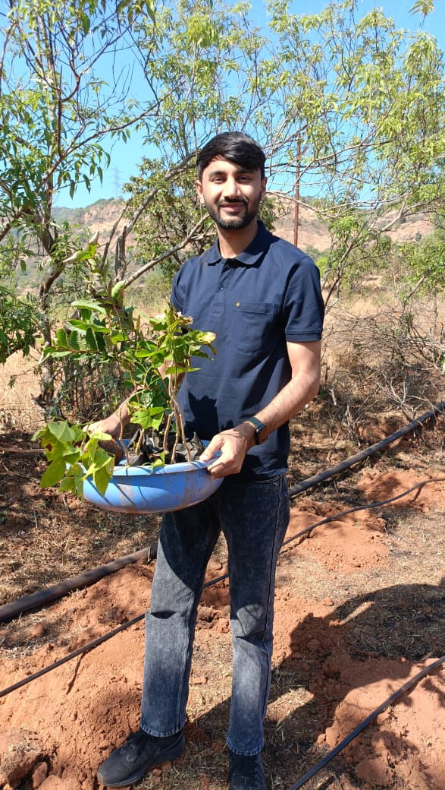

ENVIRONMENTAL CONSERVATION
Project Prakriti
Protecting nature today to create a healthier and more sustainable tomorrow.

Building a greener and more sustainable future.
Project Prakriti focuses on environmental conservation and creating awareness around sustainable living.
The initiative works towards protecting the environment through activities such as tree plantation and promoting environmentally responsible practices.
Project Prakriti also encourages communities to understand the importance of protecting natural resources and building a more sustainable future.
THE PURPOSE
Protect nature. Protect tomorrow.
Environmental conservation is not only about planting trees. It is about creating awareness and encouraging responsible choices that protect the world around us.
Project Prakriti aims to inspire people and communities to participate in environmental protection and contribute towards a greener future.
Saplings planted through the foundation's environmental initiatives.
Every planted tree represents a step towards healthier communities and a more sustainable environment.
BE PART OF THE CHANGE